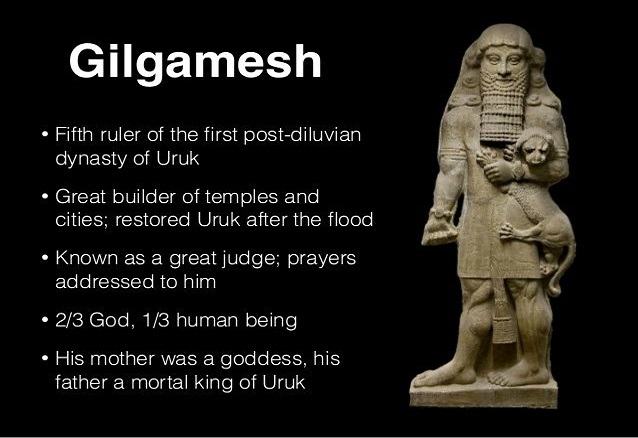

Published Only For Learning Purposes %%%%%%
Emperors of Southern Mesopotamia Dynasties

Dynasty of Uruk
Gilgamesh 2700 B.C.
Mesanepada of Ur 2450 B.C.
Eannatum of Lagash 2400 B.C.
Enannatum of Lagash 2430 B.C.
Uruinimgina of Lagash 2350 B.C.
Lugalzagesi of Uruk 2350 B.C.